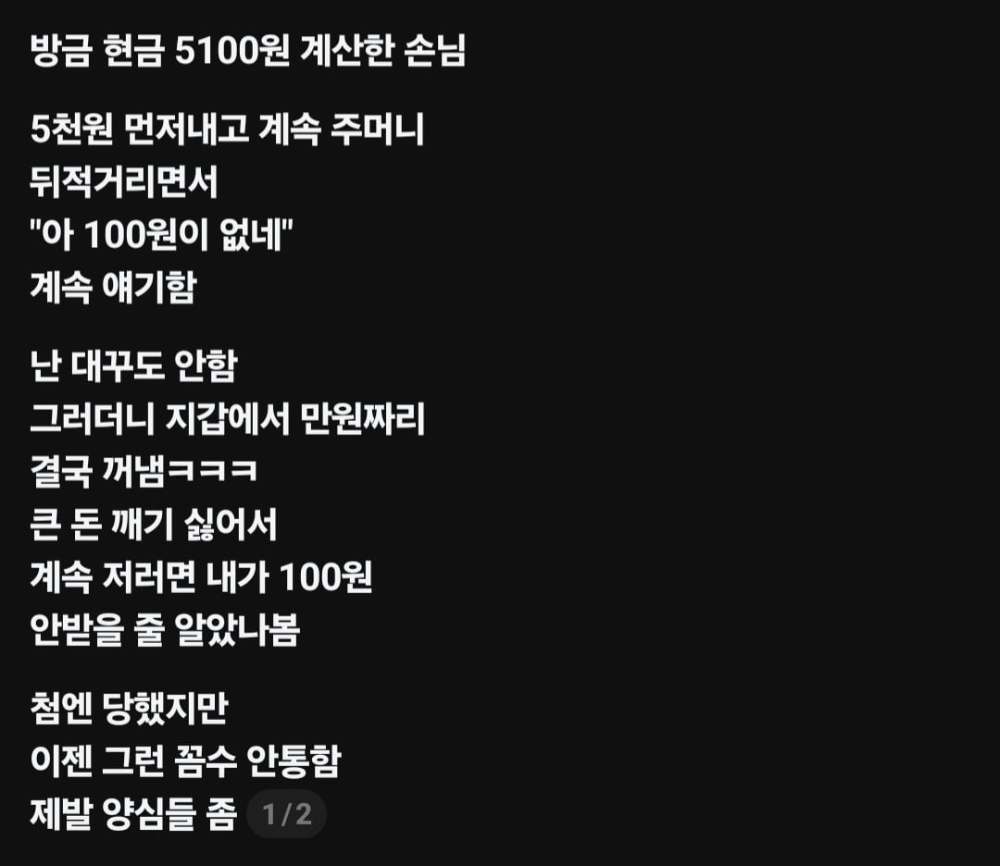

= 너 굳이굳이 100원을 끝까지 받아내야겠어? (뒤적뒤적)

= 너 굳이굳이 100원을 끝까지 받아내야겠어? (뒤적뒤적)
그럼 너 돈으로 채웠음?
ㅇㅇ 당연하지 ㅋㅋ 어떤 아주머니 몇백원 모자라길래 금방 가져온대서 걍 계산했는데 나 교대할때까지(몇시간) 안옴
에혀...ㅋㅋ
거지새끼들 한번씩 온정 배풀면 권리인줄알고 지랄함. 걍 단칼에 거절해야됨
100원 욕심 내다가 하비에르 바르뎀 들어와서 코인 토스한다
앞면이 나오면 어떻게 되는거죠?
그럼 앞면입니다.

앞통수 뚫습니다
저런 사람으로 보일까봐 내가 준비 안되어있으면 계산대로 안감
짤짤이 싫으면 그냥 900원짜리 음료수 하나 꺼내와서 알바 주는데 ㅋㅋㅋㅋ
식당일할땐데 홀 알바한테 부탁해서 포스에서 착불택배비 내주먼 내가 채워놓을게
했는데 택배비 분명 2700원이었는데 3000원을 줬대
그래서 왜?? 하니까
홀 알바가 택배기사한테 3000원 꺼내주고 거스름돈 달라니까
그거 꼭 받아야되냐? 이지랄 하고 나갔대
좆같아서 영업소 전화해서 개지랄병떨었는데
담당구역 바뀌고 그런 사이다엔딩은 없고
대신 이 1톤딸배새끼 우리 가게들어올때마다 존나 조용히 택배 내려놓고 사라졌었음
속답답한개비스콘콘
바로 잔돈 100원짜리 9개
요샌 100원 단위로 따로 카드 결제 되니까 저런거 안통함
아님. 나는 편의점업계 13년동안하고잇는데 저거는 저런얘기가아님. 100원짜리 잇어서 딱 5000원 거스름돈으로 받고싶다는 얘기임.
근데 글에는 5천원 먼저 내밀고 100원이 없다고 궁시렁하는건데 그게 그렇게도 되는거임??
아 이걸먼저 얘기햇어야햇구나 그냥 손님들은 잔돈을 만드는걸 겁나싫어함. 5000원짜리내고 백원내서 깔끔하게 해결할수잇는데 만원짜리내면 4900원받으니까 잔돈생기는게 겁나싫은거임 ㅇㅇ
그렇구나 근데
이걸다들고가요? 하는 사람 진짜 있음?
어...이건 알바마다 좀다르긴함. 그리고 봉투가격 인상과 봉투주면 처벌받는걸 모르는 사람들이 말하긴하는데 최근에는 없어지는 추세임. 알바마다 다르다는건 주휴수당때문에 자영업자들이 끊어쓰기해서 알바들 숙련도가 창나서 알바들이 물건을 가격확인하고 가격만말하고 봉투드릴까요? 이말을 안함;;
생각보다 심오한 문제네
뭐 근데 많이 사라지는 추세임 70이상인분들도 스마트폰으로 카드결제하거나 토스페이스 결제 까지하는 시대가옴;
노인들 알바가뭐 깍아줄수있는줄 알던데 시제안받으면 내가 매꾸는건데
ㅋㅋ 나도 20대 초반에 당했는데